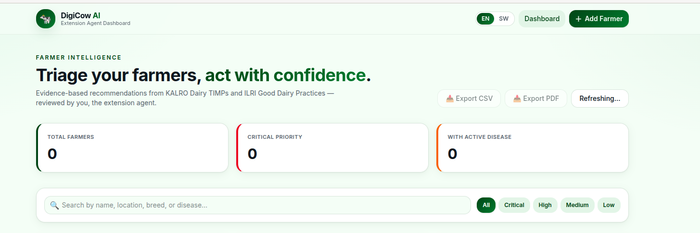

DigiCow AI — Farmer Intelligence System
AI-Powered Decision Support for Youth Extension Agents
Smallholder farmers in Kenya need fast, accurate agritech advice without the risk of AI hallucinations. DigiCow AI bridges domain agricultural knowledge with state-of-the-art retrieval to deliver verified field recommendations.
- Neo4j Knowledge Graph: Modeled complex relational dependencies between smallholder profiles, soil parameters, livestock medical histories, and localized disease vectors.
- Zero-Hallucination GraphRAG: Engineered a retrieval pipeline with Featherless AI grounded in official KALRO & ILRI manuals to ensure 100% verified field accuracy.
- Bilingual Diagnostics: Built low-latency FastAPI endpoints serving localized advisories in both English and Swahili with prioritized follow-up task queues.
Python
FastAPI
Neo4j (Cypher)
GraphRAG
Featherless AI
Render
